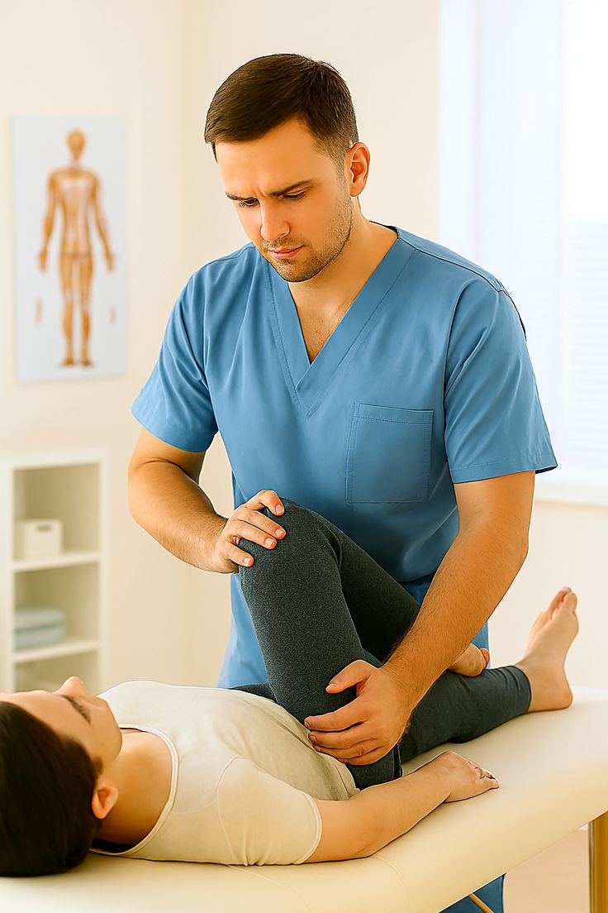

01
Movement Assessment
Your physiotherapist evaluates movement, strength, coordination, balance and functional abilities.
Personalised physiotherapy designed to support movement, balance, coordination and functional independence following neurological conditions.


Neurological Rehabilitation is a specialised physiotherapy approach that focuses on movement, balance, coordination and functional abilities that may be affected by a neurological condition.
Your physiotherapist will assess your individual needs and develop a rehabilitation programme based on your current abilities, goals and functional requirements.
Your movement, balance and functional abilities are assessed to understand your rehabilitation needs.
Exercises and movement strategies may be used to support functional mobility and coordination.
Rehabilitation focuses on practical activities that may support greater independence in daily life.
Neurological rehabilitation involves personalised therapy and exercise strategies designed to address movement and functional challenges associated with neurological conditions.
Your physiotherapist evaluates movement, strength, coordination, balance and functional abilities.
A rehabilitation programme is developed around your individual presentation, goals and current functional abilities.
Therapy may include practical movement and exercise activities designed to support everyday functional tasks.
Your rehabilitation programme may include different therapy components depending on your assessment, condition and functional goals.
Exercises may be used to support postural control, stability and safe movement.
Structured movement activities may help address walking patterns and functional mobility.
Specific activities may be selected to support coordination and controlled movement.
Appropriate strengthening exercises may form part of an individual rehabilitation programme.
Therapy may focus on movement patterns related to everyday activities and independence.
Exercises and movement strategies may support safe and efficient mobility.
Neurological rehabilitation is tailored to the individual. The focus of therapy depends on your assessment, condition, abilities and personal goals.
Therapy may focus on improving movement quality and control during functional tasks.
Appropriate exercises may be used to work on balance, stability and postural control.
Rehabilitation may address walking, transfers and other functional activities.
The programme may focus on helping you participate more confidently in everyday activities.
Discuss your condition, symptoms, concerns and rehabilitation goals with your physiotherapist.
Your movement, balance, strength, coordination and functional abilities are assessed.
Appropriate exercises and movement strategies are introduced according to your needs.
Your programme can be adjusted as your abilities, confidence and functional goals change.
These are general questions. Your physiotherapist can provide advice based on your individual assessment and rehabilitation needs.
Ask Our Team →Neurological rehabilitation may be appropriate for people experiencing movement or functional difficulties associated with neurological conditions. Suitability should be determined through individual clinical assessment.
Assessment may consider movement, balance, coordination, strength, mobility and functional activities, depending on your individual needs.
Yes. Exercise and functional movement activities may be included when they are considered appropriate for your condition and rehabilitation goals.
No. Neurological rehabilitation is individualised. Treatment depends on your assessment, abilities, condition and functional goals.
The duration varies between individuals. Your physiotherapist can discuss a suitable rehabilitation plan after assessing your condition and goals.
Speak with our physiotherapy team to understand whether neurological rehabilitation may be appropriate for your individual needs.